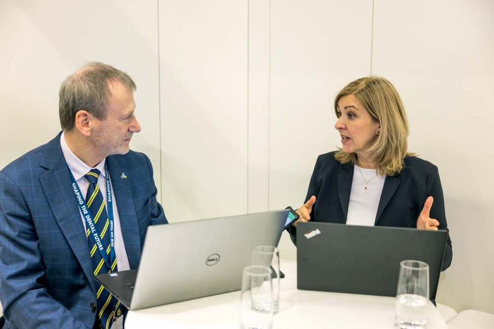
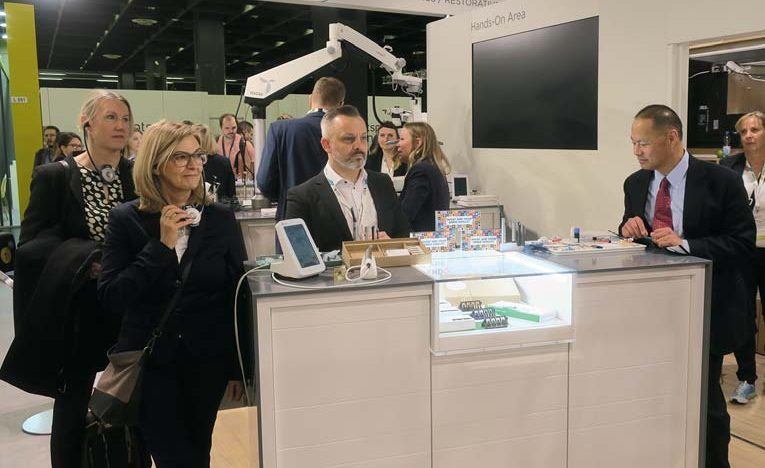
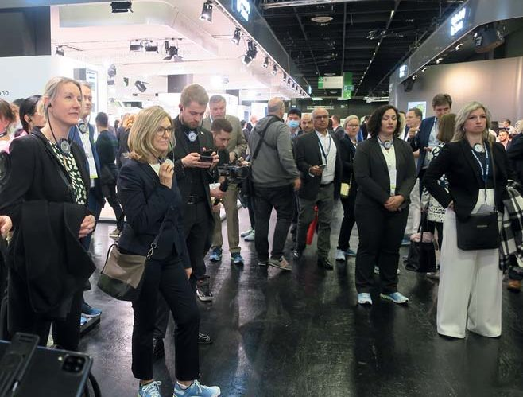
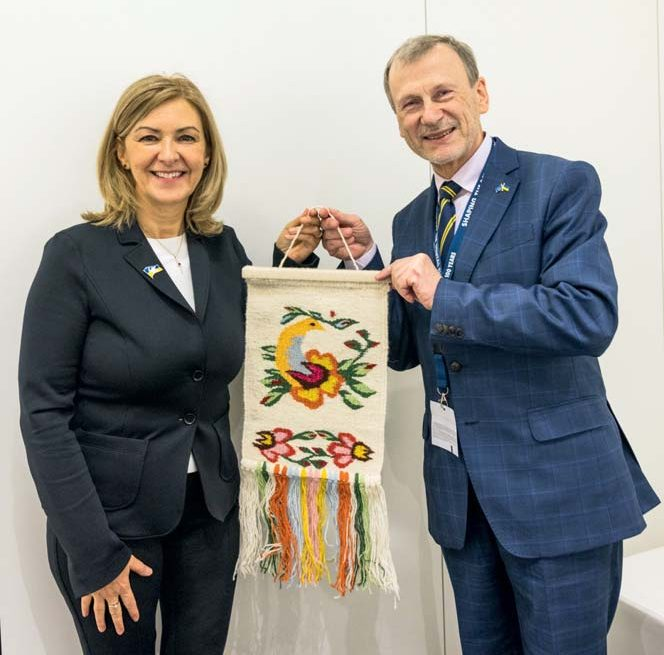

Вітальня · журнал «ДентАрт» 2023 №1
Памела Марклю (Dentsply Sirona): «Наша головна мета — підтримати стоматологів найкращими продуктами, інноваціями та освітою»

Памела Марклю — віцепрезидентка Dentsply Sirona, глобального виробника стоматологічних матеріалів та обладнання й співзасновника журналу «ДентАрт». Її посада дозволяє бачити глобальні тенденції, виклики та майбутнє стоматології.
— Шановна пані Марклю, шановна Памело, дякуємо Вам за можливість взяти інтерв'ю для читачів міжнародного журналу «ДентАрт», який видається в Україні і співзасновником якого майже 30 років тому була Dentsply Ltd. Ваша посада віцепрезидентки Dentsply Sirona, глобального виробника стоматологічних матеріалів та обладнання, дозволяє Вам бачити глобальні тенденції, глобальні виклики та глобальне майбутнє… Отже, яке майбутнє чекає на стоматологів і пацієнтів: чисті та вітальні зуби чи, можливо, імплантовані? Як Dentsply Sirona впливає на формування цього майбутнього стоматології як виробник, як викладач, як лідер?
— Я дуже рада зустрітися з Вами сьогодні! Ви згадали про 30 років співпраці… Наша головна мета — підтримати стоматологів найкращими продуктами, інноваціями та освітою для покращення стоматологічного здоров'я в усьому світі! Це наш керівний принцип і це те, що ми маємо на увазі, коли працюємо над формуванням майбутнього стоматології.
Для міжнародної стоматологічної виставки IDS 2023 ми дуже ретельно обирали девіз, він звучить як «Об'єднані заради кращої стоматології», тому що віримо — тільки разом ми можемо зробити краще майбутнє для всієї медицини! Словом, це означає, що ми з нашими клієнтами на кожному кроці їхнього професійного шляху і як одна-єдина спільнота можемо об'єднати перевірені продукти, прописані робочі процеси, цифрові платформи та освіту, потрібні стоматологам, щоб упевнено робити найкраще для своїх пацієнтів і своїх практик.
Як виробники, ми прагнемо пропонувати високоякісні продукти, найкращі у своєму класі, постійно інвестуючи в дослідження та розробки і співпрацюючи з кваліфікованими партнерами. Як викладачі, ми маємо надійну глобальну програму клінічної освіти, яка постійно оновлюється, щоб відповідати сьогоденним потребам стоматологів і тенденціям розвитку стоматології. Як лідери, ми тут для професійних стоматологів, щоб підтримати і скеровувати їх у бажанні пропонувати найкраще лікування своїм пацієнтам, щоб разом ми могли покращити стоматологічне здоров'я.
— Клінічну освіту, клінічне мислення кожен стоматолог здобуває спочатку в університеті, а потім у безперервній клінічній освіті… Ці два професійні етапи і синергетичні, і водночас конкурентні. На якому етапі, на Вашу думку, краще впроваджувати новітні досягнення науки і виробництва в практичну стоматологію: у роки навчання в університеті чи в роки стоматологічної практики?
— Я вважаю, що обидва етапи однаково важливі. Ми дуже багато говоримо в нашій компанії про освітній шлях лікаря-стоматолога, оскільки це безперервний процес навчання, і я впевнена, що немає неслушного моменту для освоєння новітніх досягнень у стоматології. Стоматологи навчаються все життя і йдуть у ногу з найновішими досягненнями клінічних знань, науки і технологій. Стоматологи хочуть робити найкраще для своїх пацієнтів, і вони можуть це зробити, маючи продукти й технології, які допомагають їм повністю зосередитися на пацієнті, це — цифрові технології. І звичайно, при переході на нові технології важлива освіта.
Найновіші технологічні досягнення повинні викладатися ще в університетах, оскільки все швидко еволюціонує і те, що є актуальним сьогодні, може стати застарілим уже через п'ять років. Тому ми вчимося постійно, і цей шлях постійного вдосконалення дуже важливий!
Кожна стадія стоматологічної професії вимагає різного типу освіти, адже для всіх важливо завжди бути в курсі подій. Залежно від того, на якому професійному етапі ви перебуваєте, у вас різні потреби. Наприклад, якщо ви щойно закінчили університет і думаєте, що вас більше цікавить: ендодонтія чи імплантація, ви розпочали практику, вам потрібно більше знань… Коли ви вже набули досвіду, то можете подбати про поглиблення своїх знань в іншій спеціалізації або навчитися ефективніше управляти стоматологічним бізнесом… Так що, я думаю, це широкий шлях, на якому важливий кожний крок, кожний етап! І у нас є пропозиції для кожного кроку й етапу, незалежно від вашої спеціалізації в стоматології, тому що Dentsply Sirona може допомогти вам у своєму розвитку!
— І таким чином знання повинні бути спрямовані на потреби пацієнтів…
— Абсолютно точно!
— Ми вважаємо, що клінічний успіх стоматологів залежить не стільки від марки реставраційних матеріалів, скільки від досконалого володіння цими матеріалами та особистих талантів самого стоматолога… Може, тому кращими вважаються ті матеріали, виробникові яких вдалося залучити до роботи ними найкращих стоматологів! Як Dentsply Sirona шукає та навчає найкращих стоматологів для роботи її матеріалами? Чи є якась система в залученні кращих стоматологів?
— Так, я погоджуюся з Вами, що майстерність стоматолога, звичайно, є найважливішою… Однак чудові матеріали, такі як матеріали Dentsply Sirona, можуть значно полегшити завдання для клініциста. Наприклад, наш текучий SDR Plus для об'ємного заповнення вливається в усі куточки й щілини відпрепарованої порожнини, а потім самовирівнюється. Таким чином стоматолог може бути впевнений, що має ідеальне прилягання по дну проксимальної порожнини. І цей перший у своєму класі матеріал з низьким полімеризаційним стресом гарантує, що реставрація прослужить тривалий час.
Або, наприклад, наша секційна матрична система Palodent V3 з її анатомічними секційними матрицями створює ідеальні точки контактних пунктів, що в іншому випадку є проблемою при використанні композитів, оскільки вони не можуть бути конденсовані до матриці, як амальгама у минулому. Або активний контроль вологи за допомогою нашого адгезиву Prime&Bond Universal, який створює рівномірний адгезивний шар навіть за наявності деякої кількості вологи в порожнині… Отож, навички та підготовка клініцистів мають велике значення, але ми також виробляємо продукти, які значно спрощують стоматологам роботу для ефективного створення довговічних реставрацій.
Тепер я розповім про опініон-лідерів і як компанія і вони знаходять одне одного. Я думаю, що це стосується не тільки якості наших продуктів, але і філософії компанії, а також людей, з якими ви співпрацюєте щодня, і ми маємо цілу мережу контактів зі стоматологічною спільнотою. Отже, я вірю, що відбувається єднання людей зі спільними світоглядом і метою! Ми шукаємо людей, які є чудовими клініцистами, проводять наукові дослідження, читають лекції, зацікавлені в проведенні навчання і хочуть долучити інших до навчання. У нас є певні критерії щодо рівня майстерності, але ми завжди знаходимо одне одного.
— З позиції стоматолога я кажу, що не треба радикально змінювати матеріали, а треба змінювати вміння використовувати ці матеріали, і тоді, наприклад, через рік практики успішний результат стане прогнозованим і автоматичним, виникне синергія між стоматологом і цими матеріалами… Тому я особисто працюю лише матеріалами Dentsply Sirona вже 30 років!
— Саме тому я думаю, що освіта є важливою, особливо практичне навчання, коли стоматолог, який уже має такі знання і вміння, може передати їх менш досвідченому колезі…
— Стоматологія — галузь медицини, яка стрімко розвивається, і виставки в Кельні яскраво це демонструють, а темпи цих змін часто порівнюють зі змінами в комп'ютерних технологіях… При цьому медицина є досить консервативною! Як Dentsply Sirona знаходить баланс між традиційною медициною та сучасними технологічними досягненнями?
— Так, це чудове запитання, тому що коли ми виводимо нові продукти на ринок, стоматологи і науковці хочуть мати клінічні докази… Отже, ми повинні надати їм дані клінічних випробувань. Це критично важливо, інакше це не спрацює. Але інколи продукт є занадто новим, і щоб поставити завдання, відповісти на запитання і почати застосовувати його в практиці, треба мати багато часу, тож інноваційні рішення в стоматології можуть проникати на ринок досить повільно… Але як тільки стоматологи спробують цей продукт у практиці і зрозуміють його переваги, процес впровадження інновацій стає набагато швидшим.
Я впевнена, що ми маємо бути відкритими, щоб допомогти стоматологам працювати ефективніше. Саме тому ми не можемо зупиняти інновації і для їх просування маємо розширювати кордони і шукати нові шляхи взаєморозуміння зі стоматологами.



— У назві Вашої посади в Dentsply Sirona на першому місці клінічна освіта — CE (Clinical Education). Яка місія програм клінічного навчання Dentsply Sirona і якою Ви бачите роль академій Dentsply Sirona та численних навчальних центрів, що співпрацюють з Dentsply Sirona, наприклад, як наш Навчальний центр «Аполлонія»?
— Ми вже говорили про роботу з авторитетними фахівцями-стоматологами. Клінічна освіта неможлива без залучення лідерів галузі. Ми не можемо проводити клінічне навчання без них, а вони, у свою чергу, не можуть без нас — це партнерство! Співпраця з місцевими освітніми центрами в усьому світі є для нас ключовою. «Аполлонія» — чудовий приклад того, як ця співпраця найкраще розгортається в Україні.
Академія Dentsply Sirona має на меті надати знання, навички, натхнення, а іноді й сертифікацію, потрібні стоматологам-професіоналам, щоб бути в курсі подій і розвивати себе та свою практику. Від досягнення кращих і більш передбачуваних результатів для пацієнтів — до простіших і ефективніших робочих процесів ми допомагаємо професіоналам-стоматологам упевнено просуватися вперед, створювати ефективніші практики та здоровіший світ.
Ми інвестували значні кошти в заклади по всьому світу, які є передовими у сфері клінічної освіти. У нас є 55 освітніх центрів у 33 країнах, і 20 із них — це академії Dentsply Sirona, повністю обладнані для проведення освітніх програм із робочих процесів цифрової стоматології.
Деякі з навчальних центрів обладнані операційними залами зі скляними стінами, і тоді стоматологи можуть спостерігати за лікуванням зблизька, а ми можемо транслювати відео лікування на весь світ, і це фантастично! Багато навчальних центрів обладнано фантомними класами, тут створене реалістичне середовище для стоматологів, де вони можуть почуватися, як у своїй клініці, і вдосконалювати свою майстерність. Ми також спонсоруємо навчання в партнерських навчальних центрах у багатьох країнах. Місцеві громади цінують ці відносини і керують ними.
— Кожен стоматолог вважає себе митцем, і це нормальний феномен, що стимулює навчатися і ставати кращим у своїй професії. Однак масова (комунальна) стоматологія обмежена стандартними процедурами та протоколами. Що Dentsply Sirona цінує більше в стоматологах: індивідуальність чи стандартизацію?
— Я вважаю, що для досягнення в стоматологічному лікуванні стабільності має бути його стандартизація. Ми говоримо про передбачуваний результат, який ви можете отримувати у звичайній повсякденній роботі. Стоматолог має усвідомлювати, що коли він використовує матеріал не так, як сплановано і протестовано виробником, він ризикує отримати погані результати лікування. Водночас є багато дуже обізнаних стоматологів, які є митцями, створюють художні реставрації найвищого рівня майстерності. Такі реставрації хочуть бачити стоматологи по всьому світу, хочуть навчитися робити такі ж реставрації, які надихають! Ці митці допомагають нам, не тільки надихаючи інших, але й беручи участь у створенні нових продуктів і майбутнього стоматології!
— У назві Вашої посади в Dentsply Sirona співпраця з ключовими лідерами думок — KOL (Key Opinion Leaders) стоїть на другому місці. Хто є ключовими лідерами думок у стоматології та наскільки легко чи важко з ними працювати?
— Нам подобається працювати з KOL, вони мають ту саму місію, що й ми: підтримувати стоматологів, надавати найкращу можливу допомогу своїм пацієнтам і поліпшувати гігієну ротової порожнини. І в цьому ми «об'єдналися заради кращої стоматології». Робота з висококваліфікованими і мотивованими професіоналами-стоматологами завжди збагачує.
Ми розглядаємо KOL як цінних партнерів, з якими тісно співпрацюємо для розробки і тестування продуктів, а також для нашої підтримки у програмах клінічної освіти. KOL обираються на основі різноманітних кваліфікацій і досвіду, щоб співпрацювати з нами, щоб дати професіоналам-стоматологам можливість упевнено робити найкраще для своїх пацієнтів, практик і спільнот. Ми співпрацюємо з професійними стоматологами, які дотримуються найвищих професійних та етичних стандартів. Деякі з основних компетенцій, за якими ми шукаємо KOL, такі:
- сильні комунікативні навички;
- компетентність і знання, а також бажання продовжувати власне навчання;
- здатність ділитися інформацією з ентузіазмом;
- демонстрація якісних клінічних випадків.
— Стоматологічна преса, спеціалізовані журнали продовжують відігравати значну роль у професійному розвитку стоматологів і стоматології, клінічні статті поширюють досвід окремих стоматологів або стоматологічних груп, проте в усьому світі існує потреба в обміні високоякісними клінічними публікаціями. Така потреба є і в нашому журналі «ДентАрт». Як Dentsply Sirona за допомогою програм клінічного навчання, ключових лідерів поширює ілюстрації передових клінічних досягнень з матеріалами і обладнанням фірми? Чи є у вас фонд публікацій, куди ми можемо надсилати якісні статті з нашого журналу «ДентАрт», а натомість отримувати для наших читачів якісні статті з інших журналів?
— У нас немає такого централізованого фонду, наскільки мені відомо, однак я можу оцінити потребу в його створенні. Ми знаємо, що клініцисти дуже зацікавлені в клінічних статтях і в аналізі реальних клінічних випадків. Ось чому минулого року ми створили галерею випадків CEREC Tessera на веб-сайті Dentsply Sirona: CEREC Tessera: Global Clinical Case Collection / Dentsply Sirona США.
Існують деякі глобальні обмеження щодо того, як ми можемо ділитися клінічними зображеннями між стоматологами різних країн через різні закони про конфіденційність у цих країнах. Тож є певні обмеження, які треба поважати. Але це чудова ідея, і ми маємо поміркувати над цим…
— Dentsply Sirona проводить Всесвітній конкурс прямої реставрації зубів Global Clinical Case Contest для студентів і молодих лікарів, які продовжують навчання в університетах. Це надихає майбутніх стоматологів на досягнення вершин професійної майстерності. Наш навчальний центр проводив міжнародні клінічні змагання з реставрації зубів матеріалами Dentsply під назвою Призма-чемпіонат, починаючи з 1994 року, з міжнародним фіналом в Україні, але через російську агресію ці змагання довелося перервати… Чи цікаво було б Dentsply Sirona відновити ці змагання після перемоги України у війні і стати співорганізатором та генеральним спонсором, як це було раніше?
— Ми дуже цінуємо співпрацю з клінікою «Аполлонія» та журналом «ДентАрт» у проведенні «Призма-чемпіонату». З нетерпінням чекаємо кращих часів, коли «Призма-чемпіонат» зможе відновитися, і готові підтримувати його через наш український офіс, наскільки це можливо.
Загалом, я б сказала, що мене дуже надихає, коли я відвідую фінал нашого Global Clinical Case Contest і бачу чудові реставраційні роботи, виконані цими молодими спеціалістами. Вважаю, що для нас дуже важливо підтримувати майбутніх стоматологів, щоб вони ставали найкращими. Конкурс орієнтований на студентів-стоматологів та молодих лікарів-стоматологів зі стажем клінічної практики менше двох років. Учасники документують свій успішний випадок лікування в тексті та зображеннях і отримують підтримку викладача зі свого університету. З моменту заснування конкурсу в 2004-2005 роках у ньому взяли участь понад 5670 студентів-стоматологів, а на конкурс 2021-2022 років було подано близько 520 клінічних випадків із 73 стоматологічних шкіл університетів з усього світу.
— Щиро дякую Вам, шановна пані Памело Марклю, за розмову і на завершення прошу висловити Ваші побажання читачам журналу «ДентАрт», стоматологам багатьох країн, які читають його українською та російською мовами…
— Шановний докторе Радлінський, велике Вам спасибі за інтерес до розмови зі мною про Dentsply Sirona! Дякую за дуже цікаві запитання! Було чудово та надихаюче спілкуватися з Вами… Наприкінці нашого інтерв'ю я хотіла б побажати Вам, вашим читачам і вашим сім'ям міцних сил у цей дуже важкий час, щоб усі ви були в безпеці!
— Щиро дякую!